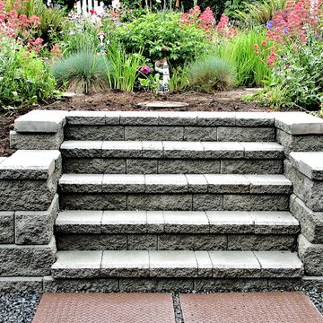
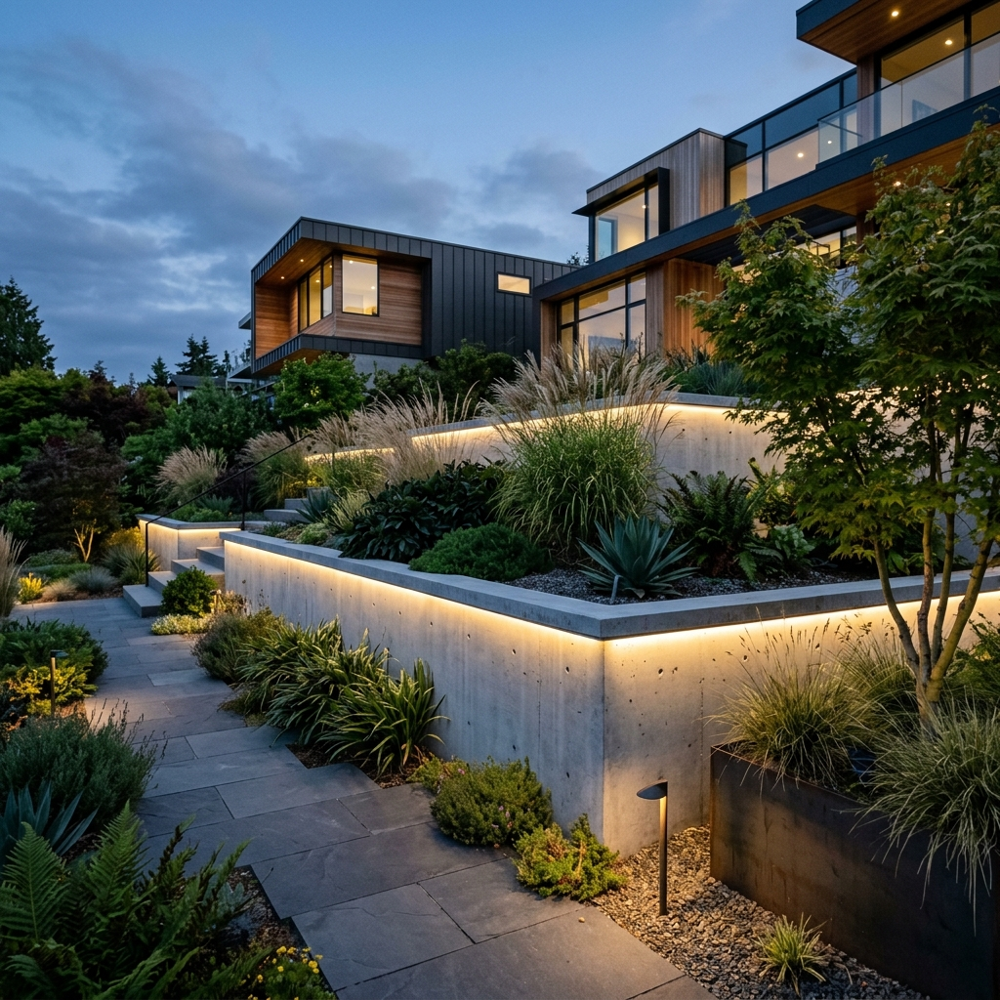
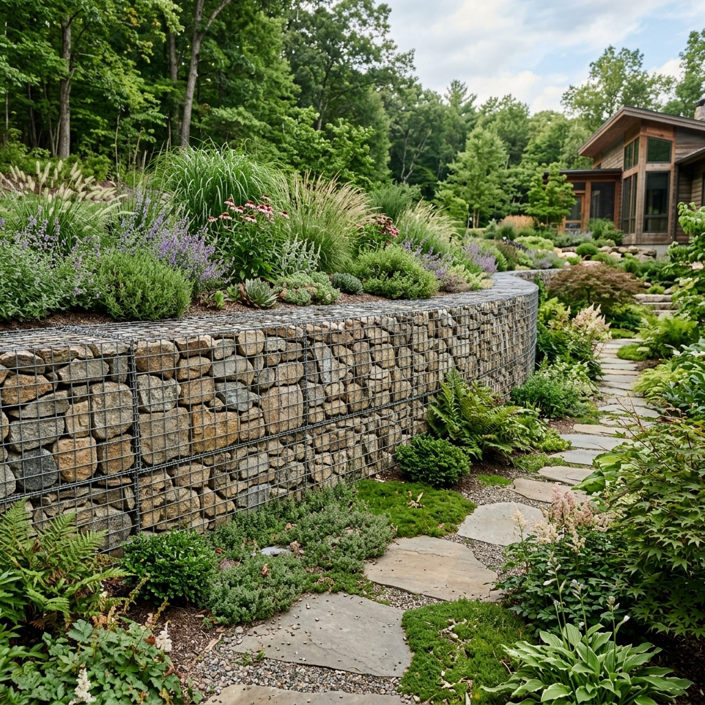

Concrete Patio
Concrete patios are popular and versatile choices for outdoor living spaces. They provide clean, durable surfaces for seating, dining, and entertaining.
Hardscaping
Professional patio planning, design, and installation for outdoor spaces that feel finished, durable, and ready to use.
Looking to transform your outdoor space into a beautiful, functional extension of your home? Our team of dedicated patio contractors in Eastern Iowa is here to bring your vision to life. We understand the importance of a well-crafted patio — it is not just an addition to your property, it reflects how you want to live and entertain outdoors.
Whether you are dreaming of a cozy, intimate patio for family gatherings or a spacious entertaining area, our Iowa patio contractors have the expertise and creativity to make it happen with materials and designs suited to Iowa's climate and seasons.
Our team brings years of hands-on experience to every project, making us the premier choice for patio installations across Eastern Iowa. We take pride in offering tailored solutions that fit your outdoor space, budget, and lifestyle.
Get Free Quote
A patio is an outdoor living space, typically constructed adjacent to a house or building and used for relaxation, entertainment, and recreation. It commonly features a flat, open flooring surface built from concrete, pavers, stone, brick, tile, or similar hardscape materials.
Patios make a home feel more usable outside, giving people a comfortable place for dining, gathering, and enjoying the yard without leaving the property. A thoughtfully designed patio can also improve curb appeal and create a cleaner transition between the home and landscape.
Call us today at (319) 320-1833 and let us bring your vision of exceptional patio in Eastern Iowa to life.

Determining the need for patio installation involves considering several factors that revolve around your lifestyle and outdoor space. Begin by thinking about how you want your yard to work for daily use, outdoor dining, weekend gatherings, or a calm place to relax.
If your current outdoor area is uneven, difficult to maintain, or lacks a finished surface for furniture and foot traffic, a patio may be the right solution. A well-built patio can add structure, improve drainage, and make your outdoor area easier to enjoy throughout the season.
Elevate your outdoor experience with our exceptional patio installation services. Because your outdoor space deserves nothing but the best, let us help you transform a plain yard into a useful, attractive extension of your home.
When you need experienced patio installation contractors, we bring a commitment to quality, clear communication, and craftsmanship to every project. We work with homeowners to create outdoor spaces that feel durable, attractive, and practical.
Value: Integrity and reliability guide our process from consultation to completion. We understand how important it is to make outdoor improvements that fit the home and budget.
Promise: We listen closely, plan carefully, and deliver work that is built to support daily use while improving the appearance of your property.
Need help planning the right patio? We review your space, drainage, and outdoor goals before work begins.
We help select the patio layout, pattern, and materials that complement your home and landscape.
We construct patios with base preparation, clean edges, and durable finish details.
Concrete patios are popular and versatile choices for outdoor living spaces. They provide clean, durable surfaces for seating, dining, and entertaining.

Stamped concrete adds texture and pattern while keeping the strength of concrete, making it useful for patios, walkways, and outdoor rooms.

A fire feature can turn a patio into a comfortable gathering spot for evenings, cooler weather, and year-round outdoor use.

Fire pits pair well with paver or stone patios, creating a focal point that makes the yard feel finished and inviting.